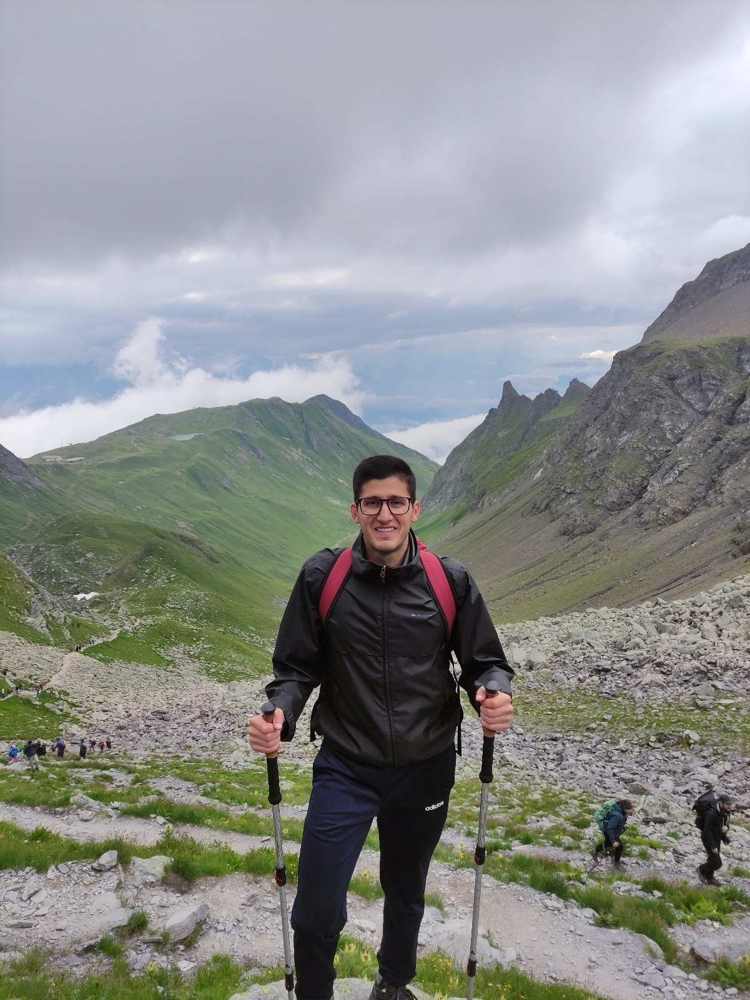

Felipe O. Cerezer
Macroecology, Evolutionary Biology & Biogeography
Welcome!
I am a Brazilian scientist passionate about understanding the diversity of life on Earth.
My research in macroecology, evolutionary biology, and biogeography uncovers the amazing patterns
and processes that sculpt biodiversity among clades, regions, and time.
Join me as I explore how life evolves, adapts, and thrives in our ever-changing world!